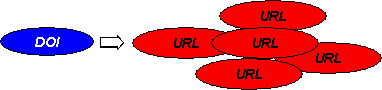
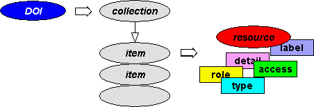
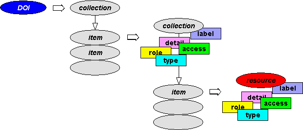
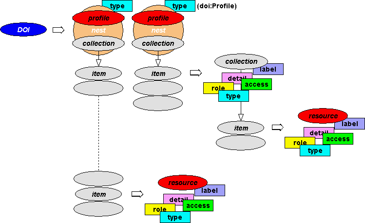
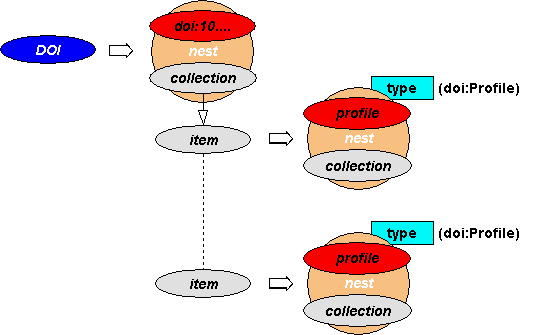

YADS, a description service, is a model which has been developed to support "Services Resolution".
This is the current position with DOI - one DOI resolves to one URL. This is what is currently implemented in the CrossRef application of DOI by the scholarly publishing community.
Fig. 1: Single resolution of a DOI. (Example)

Essentially this provides similar functionality to a PURL - a Persistent URL: namely, a redirect service.
The next step in the evolution is the "One to Many" scenario. The demo DOIs for D-Lib magazine issues which link mirror sites hosting the D-Lib issue can be resolved this way.
Fig. 2: Multiple resolution of a DOI. (Example)

The main problem with this approach is that a resolution service can't tell what to return - a single URL, or multiple URLs. And worse, there is no meaningful presentation for the end user. Raw URLs by and large are generally undecipherable strings.
What is needed is not a resolution to data elements but a resolution to services. The DOI Technical Work Group is aiming to supply a general framework for enabling DOI Services.
Consistently structured and descriptive resource hierarchies associated with DOIs are a prerequisite for the deployment of DOI Services. Here we describe YADS, a description service model which attempts this.
We first generalize the data element type URL to be a generic resource which may be another DOI resource (a URI of scheme "doi:"), a familiar web resource, or an inline resource (as presented in a URI of scheme "data:"). These resources are qualified as required by properties (see Model Properties) such as "detail" (a human readable description), "label" (a presentational element), etc. which together make up a composite resource item.
Fig. 3: YADS resource & item. (Example XML and SVG)
These resource items are then gathered into collections which have inherent orderings: "unordered", "sequenced", or "choice".
Fig. 4: YADS collection. (Example XML and SVG)

Note that if an item contains a collection instead of a resource a complete resource hierarchy can be built up.
Fig. 5: YADS resource hierarchy. (Example XML and SVG)

Each resource hierarchy is to be interpreted by a particular DOI application (eg CrossRef). Multiple hierarchies can be supported by binding the hierarchies to a DOI resource describing the application that can service the respective hierarhcy - the application profile. A resource/collection pairing such as this is termed a nest.
Fig. 6: YADS nests. (Example XML and SVG)

And because the DOI resource itself is bound to a collection of profiles there exists a toplevel nest.
Fig. 7: YADS description. (Example XML and SVG)

See Model Principles for further info.